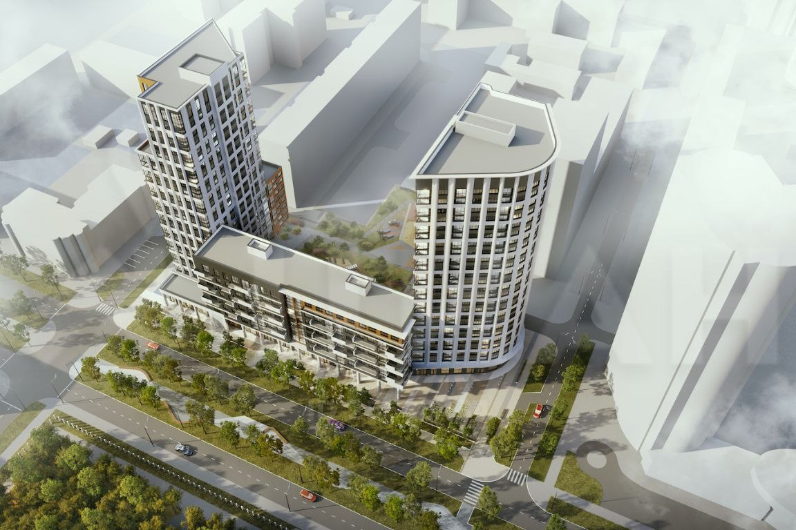
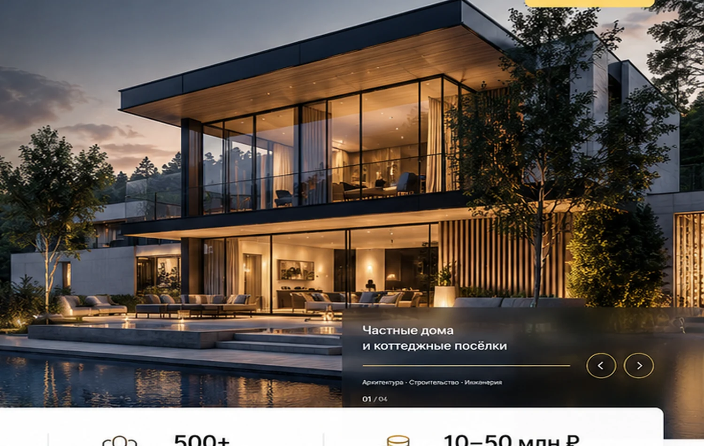

Современные дома
Хай-тек, панорамные окна, приватные дворы и светлые интерьеры.
Современные загородные дома, индивидуальные резиденции, семейные пространства и архитектурные решения, которые можно реализовать в российских условиях.
Мы рассматриваем строительство частного дома как индивидуальный проект: от участка и образа жизни семьи до инженерных решений и завершённого строительства. Международные архитектурные идеи адаптируются к российскому климату и реальным возможностям строительства.

Хай-тек, панорамные окна, приватные дворы и светлые интерьеры.

Под образ жизни семьи, участок, ландшафт и бюджет.

Рассматриваем проекты семейного соседства и общественных пространств при наличии партнёров и заказчиков.
Подготовка исходных данных, проектирование, выбор конструкций и материалов, инженерия, организация строительства. Состав работ, стоимость и сроки определяются после изучения проекта.
Поисковые темы: дом под ключ, строительство домов под ключ, дом под ключ Московская область, дом под ключ Москва, современные проекты домов. Географию услуг указываем только там, где фактически можем выполнить заказ.
Первоначальный фокус — Москва и Московская область. Запросы из других регионов рассматриваются индивидуально с учётом наличия исполнителей, логистики и условий договора.
Для Калининградской области и других удалённых регионов не заявляем постоянное присутствие или гарантированное строительство без подтверждения.
Начнём с участка, состава семьи, архитектурных предпочтений и ориентировочного бюджета.
Обсудить дом ↗